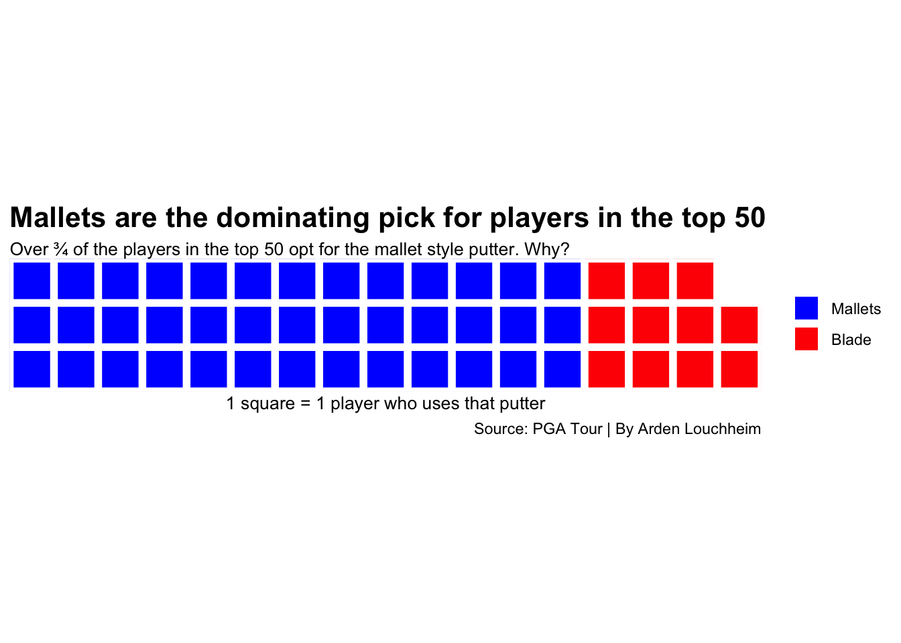
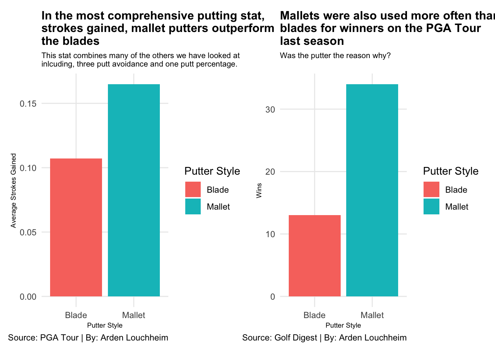
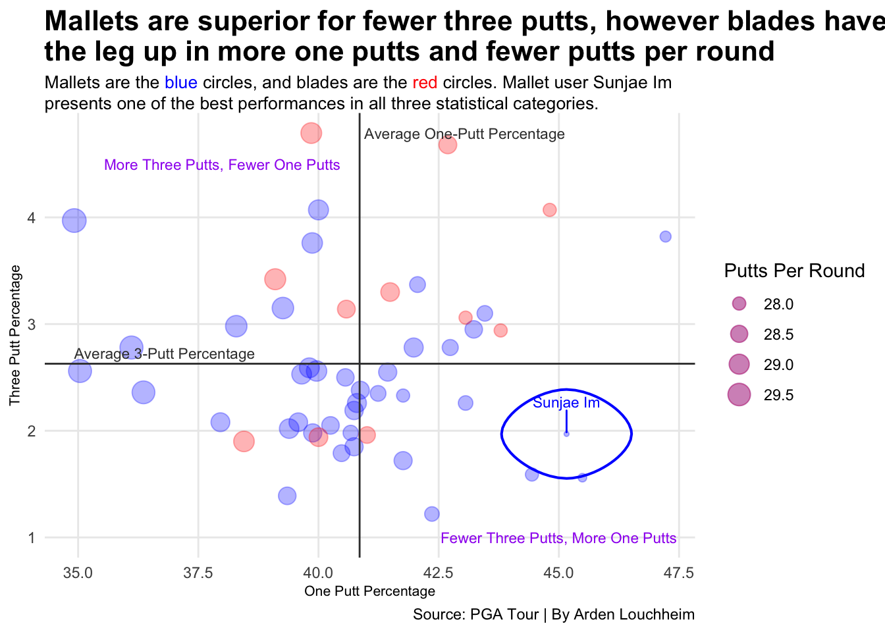

Is one putter type superior? The Mallets vs. Blades Debate.
Golf
PGA
Putters
Author
Arden Louchheim
Published
April 14, 2025
There are two main types of putters used on the PGA Tour. Mallets and blades. Mallets are largely seen as a more new age invention that use technology which simply didn’t exist during golf’s early days. However, blades have continued to evolve in their own way. Which brings up the debate: which putter type is superior? This question is difficult to answer for many reasons. First off, how do you determine what defines good putting? There are so many different stats when it comes to putting, from make rate to three putt avoidance and so much more. Also, how much does the player wielding the tool make a difference? This blog will use recent data from the top 50 golfers in the world to hopefully answer that question. So let’s start out very simple. Without yet considering performance or statistics, which putter is more a more popular pick for the pros on the PGA Tour?
Code
library(tidyverse)
── Attaching core tidyverse packages ──────────────────────── tidyverse 2.0.0 ──
✔ dplyr 1.1.4 ✔ readr 2.1.5
✔ forcats 1.0.0 ✔ stringr 1.5.1
✔ ggplot2 3.5.1 ✔ tibble 3.2.1
✔ lubridate 1.9.4 ✔ tidyr 1.3.1
✔ purrr 1.0.2
── Conflicts ────────────────────────────────────────── tidyverse_conflicts() ──
✖ dplyr::filter() masks stats::filter()
✖ dplyr::lag() masks stats::lag()
ℹ Use the conflicted package (<http://conflicted.r-lib.org/>) to force all conflicts to become errors
Code
library(gt)library(ggrepel)library(ggalt)
Registered S3 methods overwritten by 'ggalt':
method from
grid.draw.absoluteGrob ggplot2
grobHeight.absoluteGrob ggplot2
grobWidth.absoluteGrob ggplot2
grobX.absoluteGrob ggplot2
grobY.absoluteGrob ggplot2
Rows: 50 Columns: 8
── Column specification ────────────────────────────────────────────────────────
Delimiter: ","
chr (2): Player, PutterStyle
dbl (6): OWGR, SG_Putting, Putting_Avg, Putts_Per_Round, One_Putt_Pct, Three...
ℹ Use `spec()` to retrieve the full column specification for this data.
ℹ Specify the column types or set `show_col_types = FALSE` to quiet this message.
Rows: 2 Columns: 5
── Column specification ────────────────────────────────────────────────────────
Delimiter: ","
chr (1): PutterStyle
dbl (4): avg_SG, avg_one_putt_pct, avg_three_putt_pct, avg_putts_per_round
ℹ Use `spec()` to retrieve the full column specification for this data.
ℹ Specify the column types or set `show_col_types = FALSE` to quiet this message.
Rows: 2 Columns: 2
── Column specification ────────────────────────────────────────────────────────
Delimiter: ","
chr (1): PutterStyle
dbl (1): Wins
ℹ Use `spec()` to retrieve the full column specification for this data.
ℹ Specify the column types or set `show_col_types = FALSE` to quiet this message.
Code
putter_count <-c("Mallets"=39,"Blade"=11)waffle( putter_count,rows =3,xlab ="1 square = 1 player who uses that putter",colors =c("blue", "red") ) +labs(title ="Mallets are the dominating pick for players in the top 50",subtitle ="Over 3/4 of the players in the top 50 opt for the mallet style putter. Why?",caption ="Source: PGA Tour | By Arden Louchheim", ) +theme(plot.title =element_text(size =16, face ="bold"),axis.title =element_text(size =8),plot.subtitle =element_textbox_simple(size =10),panel.grid.minor =element_blank() )

Clearly the mallets are a more popular pick than the blades. There must be a reason behind that… right? However, taking a closer look at the breakdown of which players in the top 50 use which putters is interesting.
Code
player_and_putters <- putting |>select(Player, OWGR, PutterStyle)player_and_putters |>top_n(20,wt=-OWGR) |>gt() |>cols_label(Player ="Player",OWGR ="Official World Golf Ranking",PutterStyle ="Putter Style" ) |>tab_header(title ="While majority of the top 20 players play mallets, the top 10 players are a fairly even split.",subtitle ="Notably, world number 1 Scottie Scheffler switched from a blade to a mallet during putting woes." ) |>tab_style(style =cell_text(color ="black", weight ="bold", align ="left"),locations =cells_title("title") ) |>tab_style(style =cell_text(color ="black", align ="left"),locations =cells_title("subtitle") ) |>tab_source_note(source_note =md("**By:** Arden Louchheim | **Source:** [PGATour](https://www.pgatour.com/stats/putting): PGA Tour Stats Database") ) |>tab_style(locations =cells_column_labels(columns =everything()),style =list(cell_borders(sides ="bottom", weight =px(3)),cell_text(weight ="bold", size =12) ) ) |>opt_row_striping() |>opt_table_lines("none") |>tab_style(style =list(cell_fill(color ="black"),cell_text(color ="white") ),locations =cells_body(rows = PutterStyle =="Mallet" ) ) |>tab_style(style =list(cell_fill(color ="white"),cell_text(color ="black") ),locations =cells_body(rows = PutterStyle =="Blade" ) )
While majority of the top 20 players play mallets, the top 10 players are a fairly even split.
Notably, world number 1 Scottie Scheffler switched from a blade to a mallet during putting woes.
Player
Official World Golf Ranking
Putter Style
Scottie Scheffler
1
Mallet
Rory Mcilroy
2
Mallet
Xander Schauffle
3
Mallet
Collin Morikawa
4
Blade
Ludvig Aberg
5
Blade
Hideki Matsuyama
6
Blade
Russell Henley
7
Mallet
Viktor Hovland
8
Mallet
Justin Thomas
9
Mallet
Tommy Fleetwood
10
Blade
Wyndham Clark
11
Mallet
Shane Lowry
12
Mallet
Sepp Straka
13
Mallet
Keegan Bradley
14
Mallet
Patrick Cantlay
15
Mallet
Maverick McNealy
16
Mallet
Robert MacIntyre
18
Mallet
Billy Horschel
20
Mallet
Akshay Bhatia
21
Mallet
Sahith Theegala
22
Blade
By: Arden Louchheim | Source:PGATour: PGA Tour Stats Database
While the top 50 is dominated by mallets, the top 10 sees a more even distribution. It is clear there is a more popular pick in the blades vs. mallets debate. Scottie Scheffler, the number one player in the world who is coming off one of the most dominant seasons in recent history with nine wins including the coveted green jacket, swears by his Taylormade Spider mallet putter. However rising stars like Sweden’s Ludvig Aberg trust in their more classic blade. Only the numbers can truly tell the story of which type is better. First let’s look at the strokes gained putting stat. Strokes gained is the most all encompassing putting stat as it compares a player’s putting performance relative to the rest of the field. If the number is positive, that player is gaining strokes on the field. If it is negative, they are losing strokes. Alongside this strokes gained comparison is the breakdown of which type of putter amassed more wins in the 2024 season, because let’s be honest, winning is what every player is going out there to do.
Code
vis_fig_sgAVG <-ggplot() +geom_bar(data = putting_averages,aes(x = PutterStyle,weight = avg_SG,fill = PutterStyle )) +labs(x ="Putter Style",y ="Average Strokes Gained",title ="In the most comprehensive putting stat, \nstrokes gained, mallet putters outperform \nthe blades",subtitle ="This stat combines many of the others we have looked at \ninlcuding, three putt avoidance and one putt percentage.",caption ="Source: PGA Tour | By: Arden Louchheim" ) +scale_fill_discrete(name ="Putter Style") +theme_minimal() +theme(plot.title =element_text(size =12, face ="bold"),axis.title =element_text(size =7),plot.subtitle =element_text(size =8),panel.grid.minor =element_blank() ) vis_fig_winners <-ggplot() +geom_bar(data = winners,aes(x = PutterStyle,weight = Wins,fill = PutterStyle )) +labs(x ="Putter Style",y ="Wins",title ="Mallets were also used more often than \nblades for winners on the PGA Tour \nlast season",subtitle ="Was the putter the reason why?",caption ="Source: Golf Digest | By: Arden Louchheim" ) +scale_fill_discrete(name ="Putter Style") +theme_minimal() +theme(plot.title =element_text(size =12, face ="bold"),axis.title =element_text(size =7),plot.subtitle =element_text(size =8),panel.grid.minor =element_blank() )vis_fig_sgAVG + vis_fig_winners

Code
ggsave("image.png")
Saving 7 x 5 in image
So far, mallets are in the lead. It makes sense that if the mallets are superior in strokes gained putting, meaning that the players using mallets on average gain more strokes on the field than the players using blades, would also then go on to win more tournaments. Think about any golf tournament. While yes, every shot counts as one, the ones you remember are often long putts hold to force a playoff or win the tournament. The truth is that tournaments are often won and lost on the putting green. But what does the comparison look like if we examine the stats more individually? Instead of just looking at strokes gained, which combines all of the statistics, let’s examine three important statistics individually. One putt percentage, three putt percentage, and total putts per round. Golfers want their one putt percentage to be high, their three putt percentage to be low, and their putts per round to be low.
best_mallet <- mallets |>slice_min(Putts_Per_Round, n =1)ggplot() +geom_point(data = mallets,aes(x = One_Putt_Pct, y = Three_Putt_Avoid, size = Putts_Per_Round),alpha = .3,color ="blue" ) +geom_point(data = blades,aes(x = One_Putt_Pct, y = Three_Putt_Avoid, size = Putts_Per_Round),alpha = .3,color ="red" ) +geom_vline(xintercept =40.8554, color="#3b3b3b") +geom_hline(yintercept =2.6282, color="#3b3b3b") +annotate("text", x =40.8554+0.1, y =max(putting$Three_Putt_Avoid), label ="Average One-Putt Percentage", color ="#3b3b3b", size =3, hjust =0) +annotate("text", x =min(putting$One_Putt_Pct), y =2.6282+0.1, label ="Average 3-Putt Percentage", color ="#3b3b3b", size =3, hjust =0) +scale_size(range =c(5, 8), name ="Putts_Per_Round") +geom_text(aes(x =38, y =4.5, label ="More Three Putts, Fewer One Putts"),color ="purple",size =3) +geom_text(aes(x =45, y =1, label ="Fewer Three Putts, More One Putts"),color ="purple",size =3) +geom_encircle(data = best_mallet,aes(x = One_Putt_Pct, y = Three_Putt_Avoid),color ="blue",s_shape =0.01,size =2,expand =0.0000000001) +geom_text_repel(data = best_mallet,aes(x = One_Putt_Pct, y = Three_Putt_Avoid, label ="Sunjae Im"), color ="blue",size =3,nudge_y =0.3,segment.color ="blue") +labs(x ="One Putt Percentage",y ="Three Putt Percentage",title ="Mallets are superior for fewer three putts, however blades have \nthe leg up in more one putts and fewer putts per round",subtitle ="Mallets are the <span style = 'color:blue;'>blue</span> circles, and blades are the <span style = 'color:red;'>red</span> circles. Mallet user Sunjae Im presents one of the best performances in all three statistical categories.",caption ="Source: PGA Tour | By Arden Louchheim", ) +scale_size(name ="Putts Per Round") +theme_minimal() +theme(plot.title =element_text(size =16, face ="bold"),axis.title =element_text(size =8),plot.subtitle =element_textbox_simple(size =10),panel.grid.minor =element_blank() )
Scale for size is already present.
Adding another scale for size, which will replace the existing scale.

The bottom right quadrant is where you want to be. Fewer three putts and more one putts is a recipe for success on the putting greens. The blue dots are much more prevalent in that bottom right quadrant, adding even more support for the mallet putter’s case. Sunjae Im has the best putts per round average of anyone in the top 50, and that is largely due to his optimal combination of a lot of one putts and limited three putts. And, oh yeah, he plays a mallet.
Overall, mallets seem to be the superior putter type on the PGA Tour. They have produced more wins in the last year, and they consistently lead blades in many statistical categories. However, like in many sports with different equipment, the true decider of how well someone will putt is the person swinging the club. Certain putting strokes may work better with certain styles, and it is up to each pro to decide which club is right for them. But if you came to this blog torn on whether to buy that brand new mallet or brand new blade to take your golf game to the next level, I’d recommend the mallet… and to go practice your putting, regardless of the club you chose.